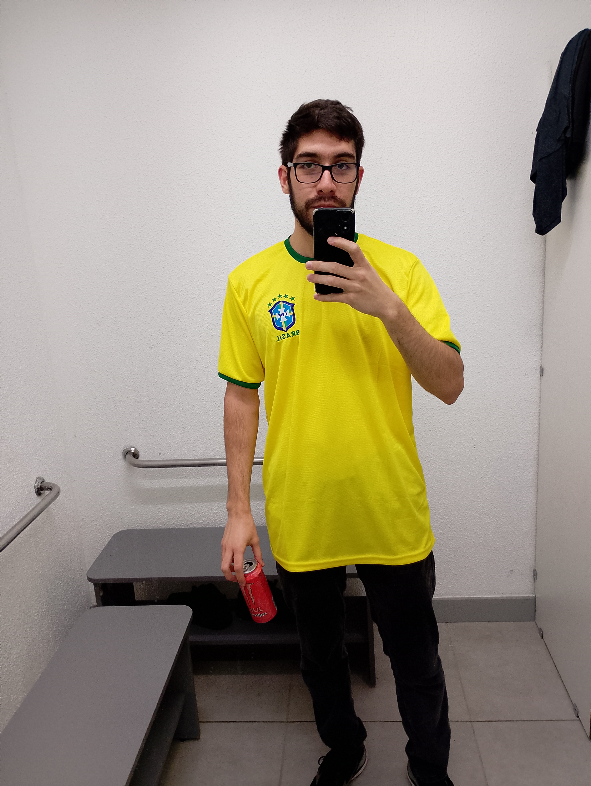

Sobre Mim

Olá! Tudo bem? Seja bem-vindo ao meu site pessoal. Sou um universitário estudante de sistemas na UTFPR, trabalho na área de produtos financeiros da Renner e venho de Florianópolis/SC, estou aqui há um pouco mais de 1 ano.
Trabalho e Objetivos Profissionais
Meta de vida é virar o lobo de Wall Street do TI.
Principais Objetivos:
- Conseguir uma grande oportunidade no mercado de tecnologia ou no mercado financeiro.
- Desenvolver boa comunicação para o ambiente de trabalho.
- Desenvolver projetos de impacto positivo.
Gostos e Hobbies
No meu tempo livre, gosto de jogar, sair com os amigos e ver séries:
- Jogos: Jogar jogos em um geral, pode ser a prática de esportes físicos ou jogos online de tiro e jogos de história.
- Sair com os amigos: Ir ao cinema, sair para comer algo fora, jogar futebol, dar uma volta, etc.
- Ver séries: Assistir a séries ou filmes de guerra, suspense, terror, ação, super-heróis e até de ficção científica.
Redes Sociais
Conecte-se comigo: